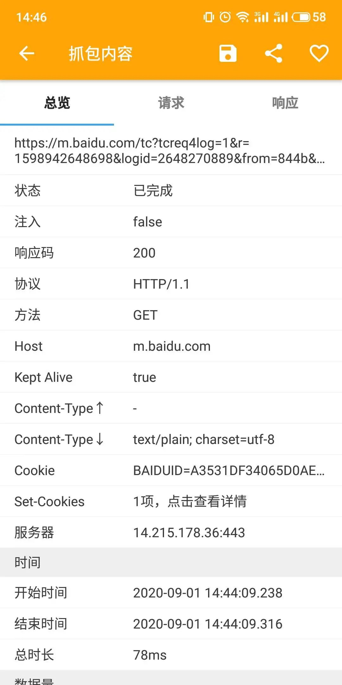
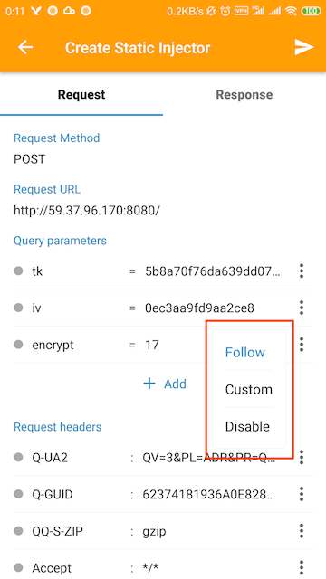

装了 httpCanary 一周，我终于看懂了手机里那些 App 在偷偷发什么
作为一个对网络调试好奇的普通用户，我抱着试试看的心态装了 httpCanary。这篇文章记录了我从抓包小白到能看懂请求详情、用注入器改接口返回的真实上手体验。
为什么我会装这个东西
说出来不怕笑话，我之前一直以为手机 App 里点一下按钮 = 魔法。直到有天朋友随手把一个抓包工具扔给我，说「你自己看看 App 在跟服务器传什么」。我抱着装了就删的心态，把 httpCanary 装上了。
说实话，装之前我对这类工具的印象停留在「程序员专属、界面晦涩、半天搞不定」。但 httpCanary 的安装流程比我想象中顺畅太多——就是在官网找下载入口拿 APK，装完跟着引导走两步，VPN 权限一开，证书装到系统里，完事。启动后主界面就是一张请求列表，纸飞机图标红了代表正在抓包，一目了然。
第一眼：请求列表真的把我看懵了
打开微信随便刷了两分钟，回头看 httpCanary 的请求列表——密密麻麻全是条目，几十上百条，URL 长得像乱码。这就是我的手机在后台干的事情？我盯着屏幕愣了好一会儿。
但好处也很明显：点任意一条请求进去就是详情页，顶部一条信息栏直接告诉我这是什么请求、耗时多久、传了多少字节、哪个 App 发的。往下滑分四个标签页——总览、请求、响应、时间。总览页把数据量和各阶段耗时做成了摘要卡片，一眼能看到这次请求 DNS 解析花了多少毫秒、TTFB 是多少。时间标签把整个请求拆成 DNS → TCP → TLS → 发送 → 等待 → 接收各阶段，对排查「为什么这个页面打开慢」特别直观。

我花了一下午在详情页里瞎点，慢慢能分清 GET 和 POST 的区别、能看懂响应头里 Content-Type 是什么意思、能把响应体里的 JSON 数据展开看字段。说白了，httpCanary 没把「网络调试」包装成什么高深学问，就是把每个请求拆解成你能看懂的样子摆在那儿。
让我惊喜的两个功能
静态注入：点一下就改接口返回
这个功能是我觉得最有意思的。之前在公司做过前端调试，想改接口返回的数据得要么找后端哥们临时改，要么自己 mock 一份，都挺麻烦。现在好了——httpCanary 的静态注入，长按一条请求 → 选「静态注入」，匹配条件自动帮你填好，然后你想改什么就改什么。
我第一次用是想试试某个电商 App 的库存接口能不能改——在响应体里找到 inventory: 0，改成 inventory: 100，保存启用，刷新 App 的商品页，库存数字真的变了。那个瞬间我觉得自己掌握了什么了不起的能力。

静态注入支持多规则同时生效——你可以开一条「给所有请求加个 Header」的规则，再开一条「给特定接口改响应体」的规则，各干各的。调试完记得关掉就行，不会一直生效。
视频自动下载插件：把藏在 App 里的视频抠出来
我手机里装了几个在线课程 App，课程视频只能在 App 里看，不能下载离线。装了 httpCanary 才知道，视频流其实一直在走网络请求。开了视频自动下载插件之后，正常播放视频，httpCanary 在后台自动匹配视频格式的 URL，存到指定目录。
目前支持的格式挺全——MP4、HLS（.m3u8 直播流）、FLV、TS 分片、WebM 都能抓。唯一要注意的是 m3u8 格式抓下来的是一堆 .ts 分片，得用 ffmpeg 合并成完整视频，这一点httpCanary文档里写得很清楚。
哪些场景下我会开着它
折腾了一周，我觉得 httpCanary 大概是这样的定位：
适合的人：
- 做前端/客户端开发的，想快速看接口数据、改返回体调试
- 对 App 的网络行为好奇，想知道「这个按钮点下去到底发生了什么」
- 需要抓某些 App 里藏起来的视频或图片资源
不太适合的人：
- 完全没接触过网络知识的小白——请求详情里那些术语（TTFB、TLS 握手、HTTP 方法）一开始确实需要点时间消化
- 以为装了就能「破解」什么——它是调试工具，不是破解工具，SSL Pinning 的 App 抓不到就是抓不到
最后说两句
我之前以为抓包工具是那种装完会觉得「好复杂我还是删了吧」的东西，但 httpCanary 让我改了看法。它的界面没有过度精简也没有过度堆砌，就是把每个网络请求的来龙去脉摆在你面前。从请求列表点进详情、长按创建注入器、开插件自动抓视频，这三个动作是我这一周用得最多的操作，没有一个需要我翻两遍说明书。
如果你也对「手机里的 App 到底在跟服务器说什么」这件事好奇，或者工作里需要调试网络接口，httpCanary 值得装来试试。
这套资料我平时也会同步到几个代码仓库里，方便换设备或者朋友要的时候直接拿，GitHub、Gitee 和 GitCode 上都有对应的分类目录，各取所需就行。